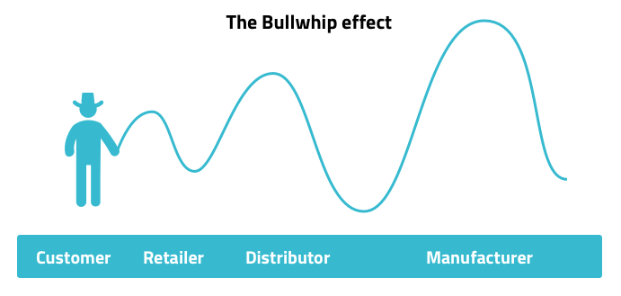

8 The bullwhip effect
This phenomenon is used to describe the impact on the supply chain of changes in demand from customers. Ultimately the largest impact is felt up the supply chain furthest from the customer.

The bullwhip effect is often caused by incorrect forecasting of demand, price fluctuations, sales promotions, lack of trust between businesses in the supply chain or low availability of materials from suppliers.
To mitigate the effects of the bullwhip when customer demands change, businesses in the supply chain maintain levels of inventory stock and ensure good communication throughout the chain, eg planning and notification of sales promotions.